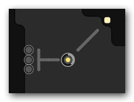

What kind of game is Screeps
Screeps is a massive multiplayer online real-time strategy game. Each player can create his or her own colony in a single persistent world shared by all the players. Such a colony can mine resources, build units, conquer territory. As you conquer more territory, your influence in the game world grows, as well as your abilities to expand your footprint. However, it requires a lot of effort on your part, since multiple players may aim at the same territory.
Screeps is developed for people with programming skills. Unlike some other RTS games, your units in Screeps can react to events without your participation – provided that you have programmed them properly. And, unlike other MMO, you do not have to play Screeps constantly to play well. It is quite enough just to check once in a while to see if everything goes well.
Game world
The game world consists of interconnected rooms. A room is a closed space 50x50 cells in size. It may have 1-4 exits to other rooms. A number of rooms in the world is limited, but increases as new players join the game. So the single game world is really huge and constantly expanding, like the Universe itself.
Download full map image (9100x9100 PNG, 17.7 MB)
Each room landscape is unique. The view of each room is generated procedurally and consists of three types of surface:
- Plain land – simple ground with a movement cost of 2.
- Swamps increase a movement cost to 10.
- Walls block movement of all creeps.
You can customize the room landscape with the help of the following facilities:
- Roads decrease a movement cost to 1. Roads deteriorate due to movement and require repair.
- Constructed walls can be created by players. Unlike natural walls, they may be attacked and destroyed by creeps.
- Ramparts are your defenses. Only your creeps may move inside your ramparts. Besides, a creep inside a rampart cell cannot be attacked until the rampart is destroyed (though it can attack others). Ramparts deteriorate with each game cycle and require repair.
In the beginning of the game, you are free to choose the place for your new colony in one of the free rooms inside the zone of the game world available for settlement. After your first spawn is set up, your room will be in safe mode. Use this time to create good defenses, or any player will be able to destroy your colony!
Your colony

Energy sources are the main game resource. They can be harvested by worker creeps. The amount of energy in a source is limited, but resumes once in 300 game ticks.
Spawns are your colony centers. They can accumulate mined energy and use it to create your units. There may be no more than 3 spawns in a room. Hence, by bulding 3 spawns in a room you actually conquer it. You can have multiple spawns totally in all your rooms though.
A spawn itself can build only basic units. In order to build more complex ones, you have to construct one or more spawn extensions. Read more about that in the next article.